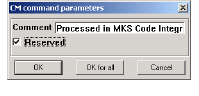

Using Rational ClearCase
The Rational ClearCase integration preserves the mapping between your source code and information model files even as you add labels and branches, and as you time-freeze your view of your source code files. Rational ClearCase does this through a concurrent-VOB paradigm.
For every version of your build, Rational ClearCase maintains a corresponding version of the information model, stored in its own VOB. This minimizes the storage requirements for the information model, just as it does for the successive versions of your source code.
When you select a Rational ClearCase option from the CM menu, DIScover displays a dialog box where you can provide comments to accompany your selection.
• Check Out places a copy of a selected file in your working directory.

• Check In uploads changes you have made to the selected file.
When checking out or checking in with Rational ClearCase, DIScover displays a default check out/in window with a Comment field that you can change.
You can also toggle on/off whether your check out is reserved. When you have finished adding your comments and deciding whether or not you want to reserve the file, click OK (or OK for All for multiple files).
• Undo Check Out cancels the previously directed check out operation.
• Reserve prevents others from checking out the same file. Use the Reserve option from the menu if you are viewing a checked out file and did not specify it as locked when you checked it out.
• Unreserve removes the reservation on a file, allowing others to check out a working copy at the same time. Use the Unreserve option from the menu if you are viewing a checked out file and reserved it at the time of check out.
• List Checked Out displays files that have been checked out by you and/or other individuals.